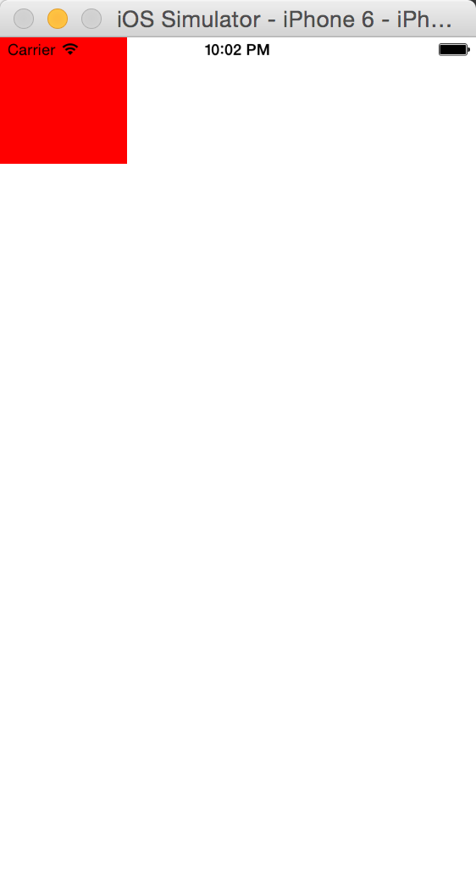
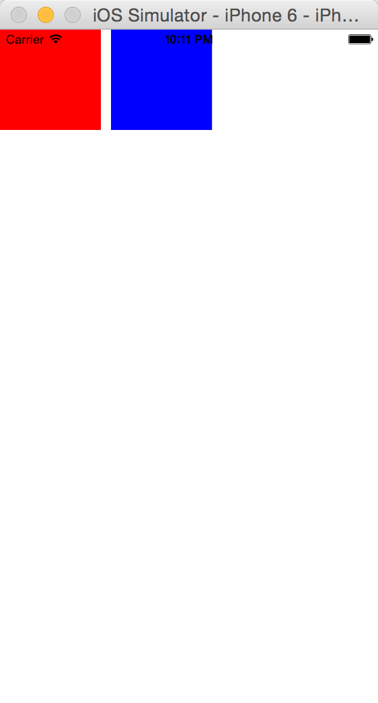
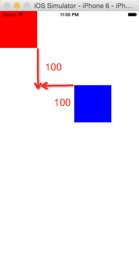
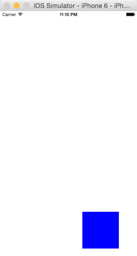
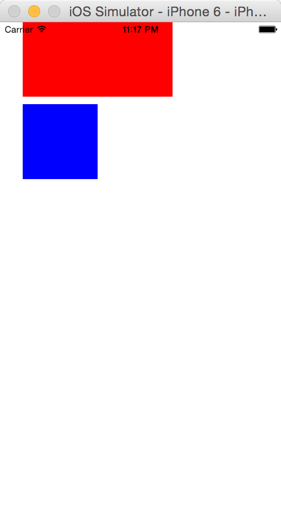
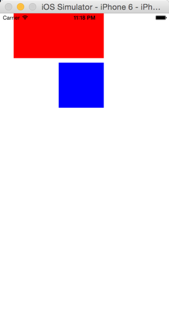
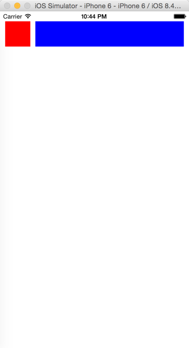

为了解决ios 原生写约束太痛苦这个问题
github：Masonry
安装
使用Pod组织安装masonry
platform :ios, '6.0'
pod 'Masonry'
注意
- 如果配合xib使用需要将“Use Auto Layout”和“Use Size Classes”这两个选项去掉，要不然控制台会报错
- 要先添加view，在添加约束
- 最好在约束中设置控件大小
经常用到的约束
设置控件宽高
UIView* red = [[UIView alloc]init];
red.backgroundColor = [UIColor redColor];
[self.view addSubview:red];
//要先添加view 之后才能添加约束
[red mas_makeConstraints:^(MASConstraintMaker *make) {
//make.size.mas_equalTo(CGSizeMake(100, 100));
//如果使用eqaulto时，设置数值前需要加@
//mas_equalTo则不用
make.height.equalTo(@100);
make.width.mas_equalTo(100);
}];
运行结果：

等同于其他控件宽高
UIView* red = [[UIView alloc]init];
red.backgroundColor = [UIColor redColor];
[self.view addSubview:red];
[red mas_makeConstraints:^(MASConstraintMaker *make) {
//make.size.mas_equalTo(CGSizeMake(100, 100));
//如果使用eqaulto时，设置数值前需要加@
//mas_equalTo则不用
make.height.equalTo(@100);
make.width.mas_equalTo(100);
}];
UIView* blue= [[UIView alloc] init];
blue.backgroundColor = [UIColor blueColor];
[self.view addSubview:blue];
[blue mas_makeConstraints:^(MASConstraintMaker *make) {
//make.size.equalTo(red);
//等价于
make.width.equalTo(red);
make.height.equalTo(red);
//这个用来设置距离红方块的距离
make.left.equalTo(red.mas_right).offset(10);
}];
结果：

设置边距margin
top和left的边距设置
UIView* red = [[UIView alloc]init];
red.backgroundColor = [UIColor redColor];
[self.view addSubview:red];
[red mas_makeConstraints:^(MASConstraintMaker *make) {
make.height.equalTo(@100);
make.width.mas_equalTo(100);
}];
UIView* blue= [[UIView alloc] init];
blue.backgroundColor = [UIColor blueColor];
[self.view addSubview:blue];
[blue mas_makeConstraints:^(MASConstraintMaker *make) {
make.width.equalTo(red);
make.height.equalTo(red);
make.left.equalTo(red.mas_right).offset(100);
make.top.equalTo(red.mas_bottom).offset(100);
}];
运行结果：

右方和下方的边距设置
UIView* blue= [[UIView alloc] init];
blue.backgroundColor = [UIColor blueColor];
[self.view addSubview:blue];
[blue mas_makeConstraints:^(MASConstraintMaker *make) {
make.height.equalTo(@100);
make.width.mas_equalTo(100);
make.right.equalTo(self.view.mas_right).offset(-50);
make.bottom.equalTo(self.view.mas_bottom).offset(-20);
}];
运行结果：

注意：在设置边距的时候上、左边距的值是正数，右、下的边距值是负数
设置左右对齐
UIView* red = [[UIView alloc]init];
red.backgroundColor = [UIColor redColor];
[self.view addSubview:red];
[red mas_makeConstraints:^(MASConstraintMaker *make) {
make.height.equalTo(@100);
make.width.mas_equalTo(200);
make.left.equalTo(self.view.mas_left).offset(30);
}];
UIView* blue= [[UIView alloc] init];
blue.backgroundColor = [UIColor blueColor];
[self.view addSubview:blue];
[blue mas_makeConstraints:^(MASConstraintMaker *make) {
make.height.equalTo(@100);
make.width.mas_equalTo(100);
//让蓝方块在红方块下方
make.top.equalTo(red.mas_bottom).offset(10);
//设置左对齐
make.left.equalTo(red.mas_left);
}];
运行结果：


撑满剩余空间
UIView* red = [[UIView alloc]init];
red.backgroundColor = [UIColor redColor];
[self.view addSubview:red];
[red mas_makeConstraints:^(MASConstraintMaker *make) {
make.height.equalTo(@50);
make.width.mas_equalTo(50);
make.left.equalTo(self.view.mas_left).offset(10);
make.top.equalTo(self.view.mas_top).offset(20);
}];
UIView* blue= [[UIView alloc] init];
blue.backgroundColor = [UIColor blueColor];
[self.view addSubview:blue];
[blue mas_makeConstraints:^(MASConstraintMaker *make) {
make.height.equalTo(red);
make.centerY.equalTo(red.mas_centerY);
make.left.equalTo(red.mas_right).offset(10);
make.right.equalTo(self.view.mas_right).offset(-10);
}];
结果：

Masonary 位移动画
在研究自定义类似Alert弹窗的视图的时候，想实现动画从屏幕底部（屏幕外）移动到屏幕靠底部（屏幕中）,如果不靠点击事件触发动画，而是在显示的时候就触发动画，动画执行的效果和预想不同：会从屏幕左上角开始展开到指定位置，而当执行延迟函数有停顿间隔后在执行动画会得到预想效果，代码：
//
// ChoosePicActiont.m
// dituwuyou
//
// Created by coolwxb on 16/3/23.
// Copyright © 2016年 dituwuyou. All rights reserved.
//
#import "PicActiontSheet.h"
#import "ColorChangeUtil.h"
@implementation PicActiontSheet
-(instancetype)initWithFrame:(CGRect)frame
{
self = [super initWithFrame:frame];
if (self) {
self.windowLevel = UIWindowLevelStatusBar+1;
self.backgroundColor =[UIColor clearColor];
UIView* bg = [[UIView alloc]initWithFrame:frame];
bg.backgroundColor = [UIColor blackColor];
bg.alpha = 0.5f;
[self addSubview:bg];
_bg_actionSheet = [[UIView alloc]init];
_bg_actionSheet.backgroundColor = [UIColor whiteColor];
_bg_actionSheet.layer.cornerRadius = 4.0f;
_bg_actionSheet.layer.masksToBounds = YES;
[self addSubview:_bg_actionSheet];
UILabel* lb_info = [[UILabel alloc]init];
lb_info.text = @"选择照片";
lb_info.textColor = [ColorChangeUtil getColor:@"#d4d4d4"];
lb_info.font =[UIFont systemFontOfSize:12];
[_bg_actionSheet addSubview:lb_info];
[lb_info mas_makeConstraints:^(MASConstraintMaker *make) {
make.centerX.equalTo(_bg_actionSheet.mas_centerX);
make.top.equalTo(_bg_actionSheet.mas_top).offset(9);
}];
UITapGestureRecognizer* tap_camera = [[UITapGestureRecognizer alloc]initWithTarget:self action:@selector(takeFromCamera)];
UITapGestureRecognizer* tap_photo = [[UITapGestureRecognizer alloc]initWithTarget:self action:@selector(takeFromPhoto)];
UITapGestureRecognizer* tap_cancle = [[UITapGestureRecognizer alloc]initWithTarget:self action:@selector(dismiss)];
UIView* item_camera = [self makeItemView:@"拍照" andAction:tap_camera andShotTopLine:YES andShowBottomLine:YES];
[_bg_actionSheet addSubview:item_camera];
UIView* item_photo = [self makeItemView:@"从相册中选取" andAction:tap_photo andShotTopLine:NO andShowBottomLine:YES];
[_bg_actionSheet addSubview:item_photo];
UIView* item_cancle = [self makeItemView:@"取消" andAction:tap_cancle andShotTopLine:YES andShowBottomLine:YES];
[_bg_actionSheet addSubview:item_cancle];
[item_camera mas_makeConstraints:^(MASConstraintMaker *make) {
make.top.equalTo(_bg_actionSheet.mas_top).offset(30);
make.height.equalTo(@44);
make.left.right.equalTo(_bg_actionSheet);
}];
[item_photo mas_makeConstraints:^(MASConstraintMaker *make) {
make.top.equalTo(item_camera.mas_bottom);
make.height.equalTo(@44);
make.left.right.equalTo(_bg_actionSheet);
}];
[item_cancle mas_makeConstraints:^(MASConstraintMaker *make) {
make.top.equalTo(item_photo.mas_bottom).offset(10);
make.height.equalTo(@44);
make.left.right.equalTo(_bg_actionSheet);
make.bottom.equalTo(_bg_actionSheet.mas_bottom).offset(-10);
}];
//放到屏幕底部不显示 稍后移动到屏幕中
[_bg_actionSheet mas_makeConstraints:^(MASConstraintMaker *make) {
make.top.equalTo(self.mas_bottom).offset(0);
make.size.mas_equalTo(CGSizeMake(300, 182));
make.centerX.equalTo(self.mas_centerX);
}];
}
return self;
}
-(UIView*)makeItemView:(NSString*)info andAction:(UITapGestureRecognizer*)tap andShotTopLine:(BOOL)showTopLine andShowBottomLine:(BOOL)showBottomLine
{
UIView* item = [[UIView alloc]init];
item.backgroundColor = [UIColor whiteColor];
item.userInteractionEnabled = YES;
[item addGestureRecognizer:tap];
UILabel* lb_info = [[UILabel alloc]init];
lb_info.text = info;
lb_info.textColor = [ColorChangeUtil getColor:@"#206ee3"];
lb_info.font = [UIFont systemFontOfSize:14];
[item addSubview:lb_info];
UIView* topline =[[UIView alloc]init];
topline.backgroundColor = [ColorChangeUtil getColor:@"#e1e1e1"];
[item addSubview:topline];
topline.hidden = !showTopLine;
UIView* bottomline =[[UIView alloc]init];
bottomline.backgroundColor = [ColorChangeUtil getColor:@"#e1e1e1"];
[item addSubview:bottomline];
bottomline.hidden = !showBottomLine;
[topline mas_makeConstraints:^(MASConstraintMaker *make) {
make.left.right.equalTo(item);
make.top.equalTo(item.mas_top);
make.height.mas_equalTo(0.5);
}];
[bottomline mas_makeConstraints:^(MASConstraintMaker *make) {
make.left.right.equalTo(item);
make.bottom.equalTo(item.mas_bottom);
make.height.mas_equalTo(0.5);
}];
[lb_info mas_makeConstraints:^(MASConstraintMaker *make) {
make.centerY.equalTo(item.mas_centerY);
make.centerX.equalTo(item.mas_centerX);
}];
return item;
}
-(void)takeFromCamera
{
[_delegate takeFromCamera];
[self dismiss];
}
-(void)takeFromPhoto
{
[_delegate takeFromPhoto];
[self dismiss];
}
- (void)show{
[self makeKeyAndVisible];
//这里不延迟执行 会出现从屏幕左上角开始执行动画
//加上延迟会执行预想的动画，从下向上移动
//如果是通过点击事件来执行位移动画则不需要延迟执行
dispatch_after(dispatch_time(DISPATCH_TIME_NOW, (int64_t)(0.1 * NSEC_PER_SEC)), dispatch_get_main_queue(), ^{
[_bg_actionSheet mas_remakeConstraints:^(MASConstraintMaker *make) {
make.bottom.equalTo(self.mas_bottom).offset(-10);
make.size.mas_equalTo(CGSizeMake(300, 182));
make.centerX.equalTo(self.mas_centerX);
}];
//这里不添加也能照常执行动画
// [self setNeedsUpdateConstraints]; //必须调用
// [self updateConstraintsIfNeeded]; //更新
[UIView animateWithDuration:0.1 animations:^{
[self layoutIfNeeded];
}];
});
}
- (void)dismiss{
[_delegate dismissActionSheet];
}
@end
UITableViewCell的contentView宽度为0的约束警告
[bg mas_makeConstraints:^(MASConstraintMaker *make) {
make.top.equalTo(self.contentView).offset(HOffsetScale(10));
make.width.mas_equalTo(SCREEN_WIDTH-WOffsetScale(30));//必须加宽度 如果不加，会报 contentview.width==0 的约束警报
make.centerX.equalTo(bg.superview);
make.bottom.equalTo(self.contentView).offset(HOffsetScale(0));
make.height.mas_greaterThanOrEqualTo(HOffsetScale(44));
}];
Masonry调试
//you can attach debug keys to views like so:
// greenView.mas_key = @"greenView";
// redView.mas_key = @"redView";
// blueView.mas_key = @"blueView";
// superview.mas_key = @"superview";
//OR you can attach keys automagically like so:
MASAttachKeys(greenView, redView, blueView, superview);